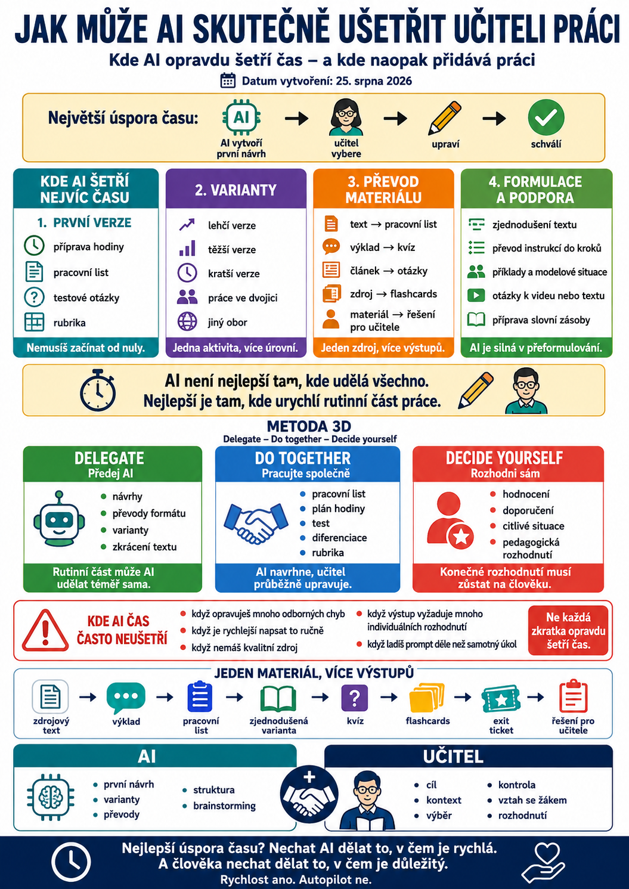

O umělé inteligenci se často říká, že učitelům šetří čas.
To je pravda jen napůl.
AI může některé úkoly výrazně urychlit. Jindy ale vytvoří tolik další kontroly, úprav a přepisování, že výsledná úspora času zmizí.
Proto není nejdůležitější otázka:
Co všechno dnes AI umí?
Mnohem praktičtější je:
Které části učitelské práce má smysl AI opravdu předat?

Největší úspora času nevzniká tam, kde AI udělá všechno
Největší přínos často není v kompletní automatizaci.
Mnohem lépe funguje rozdělení práce:
To se hodí hlavně u činností, které:
- se často opakují,
- mají podobnou strukturu,
- vyžadují mnoho variant,
- obsahují rutinní formulace,
- zabírají čas, ale nevyžadují pokaždé zásadní odborné rozhodnutí.
1. První návrh přípravy hodiny
Jedna z nejčastějších možností.
Místo začínání od prázdného dokumentu můžeme AI zadat:
- téma,
- ročník,
- délku hodiny,
- cíl,
- předchozí znalosti,
- požadovaný typ aktivit.
AI vytvoří první strukturu.
Například:
10 minut – vysvětlení
20 minut – hlavní aktivita
7 minut – procvičení
3 minuty – exit ticket
Učitel pak nemusí začínat od nuly.
To je často skutečná úspora.
2. Tvorba variant stejné aktivity
Tady je AI mimořádně praktická.
Máme jednu aktivitu a potřebujeme:
- jednodušší variantu,
- obtížnější variantu,
- kratší variantu,
- verzi pro práci ve dvojici,
- domácí variantu,
- variantu pro jiný obor.
Dříve bychom každou verzi upravovali ručně.
Dnes můžeme říct:
Zachovej vzdělávací cíl, ale vytvoř tři úrovně obtížnosti.
Nebo:
Uprav tuto aktivitu tak, aby ji zvládl žák s menší slovní zásobou. Neměň ale obsah, který se má naučit.
AI vytvoří základ.
Učitel pak jen kontroluje, zda diferenciace skutečně dává pedagogicky smysl.
3. Pracovní listy
Pracovní list je přesně ten typ materiálu, kde AI může ušetřit hodně času.
Může například vytvořit:
- doplňování,
- přiřazování,
- otázky k textu,
- třídění,
- modelové situace,
- krátké aplikační úlohy,
- řešení pro učitele.
Největší výhoda ale není:
AI vytvoří pracovní list.
Výhoda je spíš:
AI vytvoří deset návrhů úloh a já si vyberu šest dobrých.
To je výrazně rychlejší než vymýšlet vše od první otázky.
4. Testové otázky
AI dokáže rychle navrhnout:
- otázky s výběrem odpovědi,
- otevřené otázky,
- pravda/nepravda,
- situační úlohy,
- otázky podle různých úrovní obtížnosti.
Tady ale platí zásadní pravidlo:
Test vytvořený AI musí být před použitím zkontrolován.
AI může například vytvořit:
- dvě správné odpovědi,
- špatný klíč,
- nejednoznačnou formulaci,
- otázku mimo probírané učivo,
- chybný fakt.
Proto je ideální workflow:
5. Řešení a klíče
Velmi praktická drobnost.
Pokud už máme pracovní list nebo test, můžeme AI požádat:
Vytvoř řešení pro učitele.
Nebo:
Zkontroluj můj klíč a upozorni mě, pokud je některá odpověď nejednoznačná.
To může ušetřit překvapivě hodně času.
Zvlášť u rozsáhlejších pracovních listů.
6. Převod jednoho materiálu do jiné podoby
Tohle patří mezi nejsilnější možnosti.
Máme například výkladový text.
AI z něj může vytvořit:
- pracovní list,
- otázky,
- flashcards,
- kvíz,
- shrnutí,
- slovníček,
- kontrolní otázky,
- domácí úkol.
Nemusíme tedy vytvářet každý materiál znovu.
Jedna příprava může být základem pro několik různých výstupů.
7. Zjednodušení textu
Máme odborný text, který je pro určitou skupinu žáků příliš složitý.
Místo kompletního ručního přepisování můžeme AI zadat:
Zachovej všechny důležité informace, ale zkrať věty, vysvětli obtížná slova a uprav text pro žáky prvního ročníku.
To neznamená, že výsledek použijeme bez kontroly.
Ale první úprava může být hotová během několika sekund.
8. Vytváření příkladů
Učitelé často nepotřebují další teorii.
Potřebují další příklad.
AI může vytvořit:
- příklad věty,
- slovní úlohu,
- modelovou situaci,
- krátký dialog,
- případovou studii,
- scénář pracovního pohovoru,
- příklad chyby,
- situaci z reálného života.
Například:
Vytvoř pět reálných situací, ve kterých elektrikář potřebuje použít angličtinu.
Nebo:
Vytvoř tři situace, na kterých lze vysvětlit princip nabídky a poptávky.
Tohle bývá rychlé a praktické.
9. Brainstorming
AI je dobrá tam, kde nepotřebujeme jednu správnou odpověď.
Potřebujeme možnosti.
Například:
- témata projektů,
- názvy aktivit,
- otázky do diskuse,
- příklady,
- role do simulace,
- nápady na warm-up,
- témata prezentací.
Místo otázky:
Co mám udělat?
je lepší:
Navrhni deset různých možností. Záměrně je udělej odlišné.
Pak vybírá učitel.
10. Otázky do diskuse
Příprava kvalitních diskusních otázek může být překvapivě časově náročná.
AI můžeme požádat:
Vytvoř otázky od jednoduchého názoru přes argumentaci až po otázky bez jednoznačné odpovědi.
To se hodí například do:
- občanské nauky,
- jazykové výuky,
- historie,
- etiky,
- mediální výchovy.
11. Zpětná vazba
AI může pomoci formulovat zpětnou vazbu.
Například máme poznámku:
Obsah dobrý, ale práce je nepřehledná a argumenty nejsou vysvětlené.
AI může vytvořit vhodnější formulaci:
Obsahově má práce dobrý základ. Pro další zlepšení se zaměř na jasnější strukturu a u hlavních tvrzení doplň vysvětlení, proč jsou důležitá.
Učitel ale musí rozhodnout, zda zpětná vazba skutečně odpovídá práci žáka.
AI nemá nahrazovat pedagogický úsudek.
12. Hodnoticí rubriky
AI může velmi rychle vytvořit první návrh kritérií.
Například:
Vytvoř jednoduchou rubriku pro hodnocení prezentace žáků.
Kritéria mohou zahrnovat:
- obsah,
- strukturu,
- srozumitelnost,
- práci se zdroji,
- jazyk,
- prezentaci.
Učitel potom rubriku upraví podle vlastních požadavků.
13. Převod složitých instrukcí
Někdy máme úkol, kterému rozumíme my, ale žáci už méně.
AI můžeme říct:
Přepiš zadání do pěti krátkých kroků. Každý krok začni slovesem.
Například místo dlouhého odstavce vznikne:
- Přečti text.
- Podtrhni hlavní myšlenku.
- Najdi tři argumenty.
- Porovnej odpověď se spolužákem.
- Napiš závěr.
To může pomoci zvlášť u složitějších úloh.
14. Příprava slovní zásoby
U jazykové výuky může AI pomoci vytvořit:
- tematický seznam slov,
- příkladové věty,
- krátké dialogy,
- doplňovací cvičení,
- fráze pro konkrétní situaci.
Například:
Vyber 12 nejdůležitějších slov k tématu Electrical Safety pro žáky A1. Ke každému napiš jednoduchou anglickou větu.
Učitel pak zkontroluje odbornou správnost a vhodnost slovní zásoby.
15. Příprava otázek k videu nebo textu
Máme obsah.
Potřebujeme k němu rychle vytvořit úkol.
AI může připravit:
- otázky před sledováním,
- otázky během sledování,
- otázky po sledování,
- shrnutí,
- reflexi.
To je jeden z typických úkolů, kde první návrh AI šetří spoustu rutinní práce.
16. Shrnutí dlouhého materiálu
Máme například:
- metodický dokument,
- dlouhý článek,
- změnu pravidel,
- odbornou studii.
AI může vytvořit:
- hlavní body,
- praktické důsledky,
- krátké shrnutí,
- seznam věcí, které musí učitel vědět.
Pozor ale:
Pokud je přesnost důležitá, je lepší pracovat přímo s konkrétním dokumentem a výsledek ověřit.
17. Opakování učiva
Z jednoho tématu může AI připravit několik různých forem opakování:
- rychlý kvíz,
- otázky ve dvojicích,
- flashcards,
- bingo,
- doplňovačku,
- soutěž,
- „najdi chybu“,
- exit ticket.
Učitel pouze vybírá formu vhodnou pro konkrétní třídu.
18. Příprava suplování
To je situace, kde může AI opravdu zachraňovat nervy.
Například:
Připrav samostatnou 45minutovou aktivitu k tématu [téma]. Žáci musí být schopni pracovat bez předchozího výkladu suplujícího učitele. Přidej jasné instrukce a řešení.
Během chvíle máme alespoň použitelný základ.
A někdy je právě „použitelný základ“ přesně to, co člověk ve středu v 7:12 ráno potřebuje.
Kde AI šetří nejvíc času?
Typicky tam, kde potřebujeme:
PRVNÍ VERZI
Například:
- příprava,
- pracovní list,
- rubrika,
- otázky.
VARIANTY
Například:
- lehčí,
- těžší,
- kratší,
- jiný obor.
PŘEVOD
Například:
- text → kvíz,
- výklad → pracovní list,
- článek → otázky.
FORMULACI
Například:
- instrukce,
- zpětná vazba,
- vysvětlení,
- shrnutí.
Kde AI čas naopak často neušetří?
Jsou situace, kdy AI vypadá jako zkratka, ale ve skutečnosti vytvoří další práci.
Například když:
- musíme opravovat velké množství odborných chyb,
- zadání je natolik specifické, že je rychlejší ho udělat ručně,
- nemáme kvalitní zdroj,
- výstup vyžaduje mnoho individuálních rozhodnutí,
- ladíme prompt déle než samotný úkol.
Pokud jednoduchý text napíšeme za dvě minuty, není nutné deset minut přesvědčovat AI, aby ho napsala přesně podle našich představ.
Co bych AI nepředávala bez velmi silné kontroly
AI bych nepoužívala jako autonomního rozhodovatele u činností, jako je:
- finální známkování,
- rozhodování o žákovi,
- posuzování speciálních vzdělávacích potřeb,
- řešení kázeňských situací,
- bezpečnostní rozhodnutí,
- právní výklady,
- citlivá komunikace s rodiči bez kontroly.
AI může pomoci připravit podklady.
Rozhodnutí musí zůstat na člověku.
Metoda 3D: Delegate – Do together – Decide yourself
Pro každodenní práci si můžeme vytvořit velmi jednoduché rozdělení.
1. DELEGATE – předej AI
Rutinní část může AI udělat téměř sama.
Například:
- vytvoř návrhy,
- změň formát,
- připrav varianty,
- zkrať text.
2. DO TOGETHER – pracujte společně
AI vytvoří návrh a učitel jej postupně upravuje.
Například:
- pracovní list,
- plán hodiny,
- test,
- rubrika,
- diferenciace.
3. DECIDE YOURSELF – rozhodni sám
Učitel si může od AI nechat připravit informace nebo možnosti.
Konečné rozhodnutí ale udělá sám.
Například:
- hodnocení,
- doporučení,
- citlivé situace,
- pedagogická rozhodnutí.
Jeden materiál, více výstupů
Velkou úsporu času přináší také způsob práce, kdy nevytváříme každý výstup zvlášť.
Máme například jeden kvalitní zdrojový text.
Z něj může vzniknout:
To je mnohem efektivnější než začínat pokaždé od nuly.
Největší úspora vzniká opakováním dobrého workflow
Pokud pokaždé otevíráme AI a začínáme:
Hmm… co jí teď napíšu?
čas moc neušetříme.
Mnohem efektivnější je mít několik vlastních osvědčených postupů.
Pracovní list
Test
Diferenciace
Jakmile takové workflow používáme opakovaně, začíná skutečná časová úspora.
AI nemá šetřit každou minutu
Cílem není odstranit z učitelské práce všechno, co zabere čas.
Některé věci zabírají čas proto, že jsou důležité.
Například:
- přemýšlení nad cílem hodiny,
- rozhodování o vhodné aktivitě,
- hodnocení práce žáka,
- rozhovor se žákem,
- zpětná vazba,
- pedagogické rozhodování.
Tady bychom měli být opatrní s představou:
Když to umí AI, můžeme to automatizovat.
Technicky možná.
Pedagogicky ne vždy.
Nejlepší úspora času?
Nechat AI dělat to, v čem je rychlá.
A člověka nechat dělat to, v čem je důležitý.
• první návrh
• varianty
• převody
• struktura
• brainstorming
Učitel
• cíl
• kontext
• výběr
• kontrola
• vztah se žákem
• rozhodnutí
Takové rozdělení práce dává ve škole mnohem větší smysl než snaha automatizovat úplně všechno.
Co následuje?
V dalším článku se podíváme na oblast, kde může AI učiteli pomoci opravdu výrazně:
UDL + AI: Jak přizpůsobit výuku různým žákům
Ukážeme si, jak pomocí AI:
- zjednodušit instrukce,
- připravit různé úrovně podpory,
- vytvořit více způsobů vysvětlení,
- nabídnout různé formy práce,
- a přitom nesnižovat vzdělávací cíl.